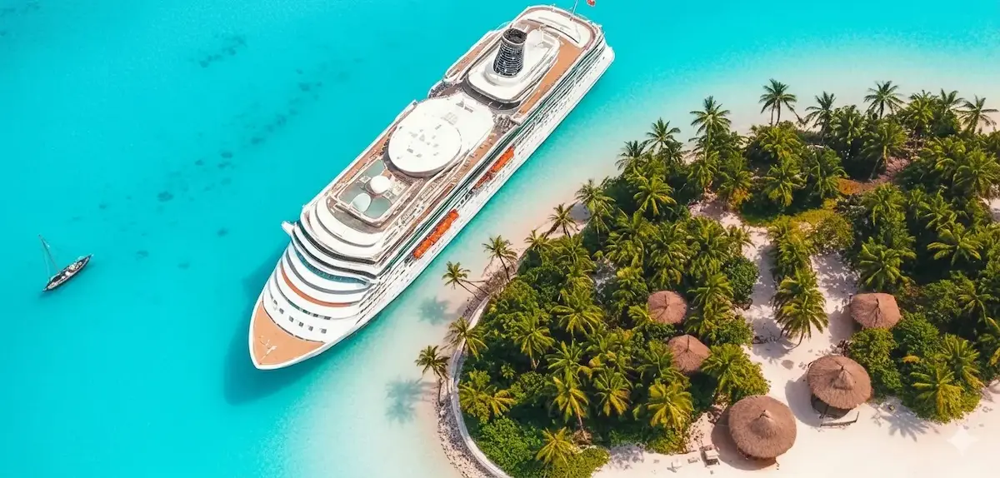
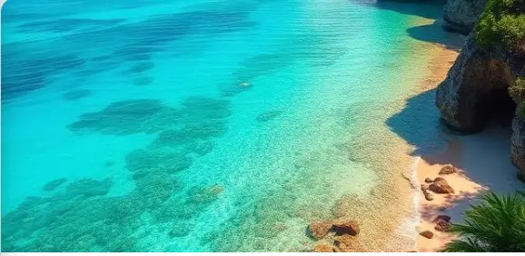
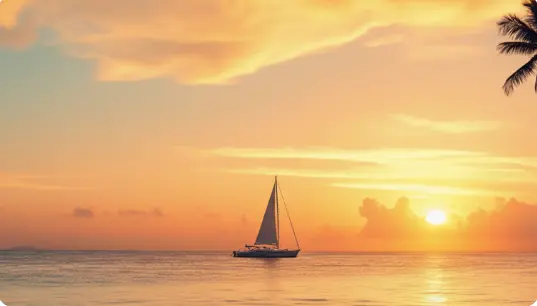

Tres experiencias únicas para descubrir la magia del Caribe.
Cada ruta incluye 7 días de aventura con todo
incluido.

El clásico del Caribe con playas de ensueño
Navega por las aguas turquesas del Caribe Occidental, visitando los destinos más emblemáticos como Cozumel, Gran Caimán...
Ver itinerario completo →
Descubre los secretos mejor guardados del Caribe.
Una ruta para los más aventureros. Visita islas vírgenes, playas escondidas y experimenta la cultura auténtica del Carib...
Ver itinerario completo →
Lo mejor del Caribe en una escapada perfecta
La ruta ideal para una primera experiencia en crucero. Destinos accesibles, ambiente relajado y todo lo necesario para u...
Ver itinerario completo →